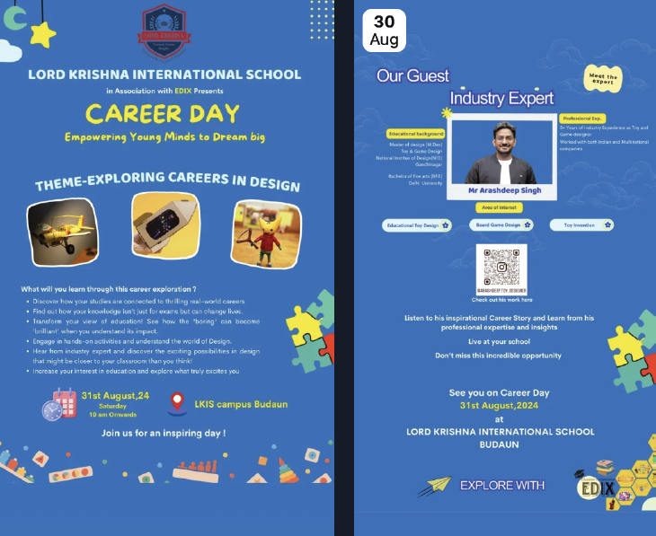

It was an honor to be invited as an Industry Expert for Career Day at Lord Krishna International School, in association with EDIX.
The session focused on exploring careers in design and helping young minds understand the power of creativity, curiosity, and learning through play.
I shared my journey as a Toy and Game Designer, highlighting how ideas evolve into real products through design thinking and innovation.
Students were introduced to the world of educational toy design, board game design, and toy invention.
The interaction encouraged them to see learning beyond textbooks and discover how design connects education with real-world impact.
It was inspiring to witness the enthusiasm, questions, and imagination of the students.
Career Day served as a reminder that design is not just a profession, but a way of thinking and problem-solving.
Grateful for the opportunity to contribute to shaping young perspectives and inspiring future creators.
EVENTS


On the occasion of Earth Day, Skoodle organized the “Green Champions” workshop for preschool children in two different schools in Vadodara.
Under the theme “Nurture the Nature,” kids participated in fun clay modelling and creative painting activities inspired by trees, plants, and the Earth. Through colours and clay, children expressed their creativity while learning simple messages about caring for the environment.
The workshop was conducted at:
- i-School, Karelibaug – Vadodara (Day 1)
- i-School, Gotri – Vadodara (Day 2)